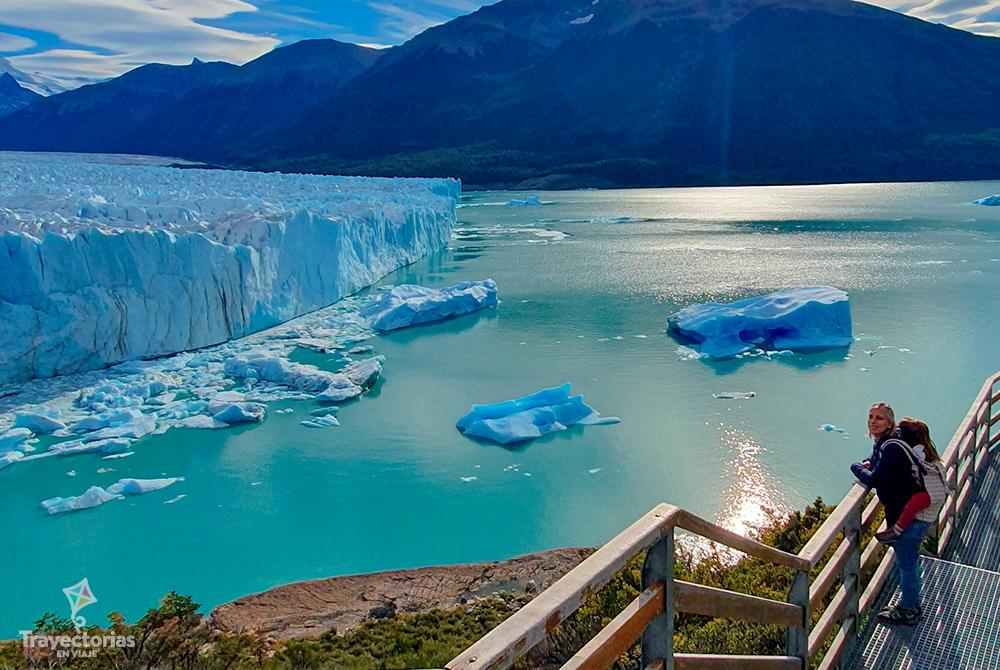

Principales atracciones turisticas de Argentina
Buenos Aires
La ciudad de Buenos Aires es una urbe cosmopolita que alberga diariamente a más de 3 millones de personas entre los visitantes y los que viven en la ciudad. Buenos Aires tiene poco que envidiar a capitales como Paris, Londres o Madrid. Es diversa, imponente, bulliciosa y se puede encontrar todo lo que el turista busque y más.
Cataratas del Iguazú

Son las caídas de agua más caudalosas del mundo. Las Cataratas del Iguazú se encuentran en clavadas en la frontera entre Brasil y Argentina. En Argentina se ubican en el norte de la provincia de Misiones. Del lado argentino las protege el Parque Nacional Iguazú que cuenta con 67.000 hectáreas. Las cataratas son impresionantes y son una muestra de la obra inmensa de la naturaleza.
Glaciar Perito Moreno
Este glaciar muestra una vez al año, un impactante fenómeno: su gran masa de hielo avanza continuamente, provocando el desprendimiento de gigantescos bloques de hielo en su frente de 5 Km. de ancho. Este desprendimiento genera un estruendo similar al de los truenos.